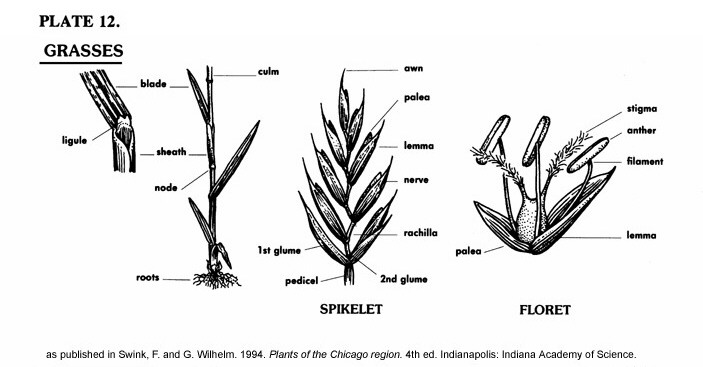

Glossary for Poaceae
For terms not listed here, see the Plant Glossary.

- Awn
- — A stiff bristle situated at the tip of a glume or lemma.
- Caryopsis
- — A seed-like fruit with a thin outer wall; a grain.
- Collar
- — The junction of the leaf sheath and blade.
- Culm
- — The stem of a grass.
- Floret
- — A single small flower, usually a member of a cluster, such as a spikelet or a head.
- Glume
- — The lowest two (sometimes one) empty scales subtending the usually fertile scales in grass spikelets.
- Lemma
- — The lowermost of the two scales forming the floret in a grass spikelet -- the uppermost, less easily seen, is called the palea.
- Ligule
- — An extension, often scarious (papery), of the summit of the leaf sheath.
- Nerve
- — Same as a vein. The central vein running lengthwise on a scale
- Node
- — The point along a stem which gives rise to leaves, branches, or inflorescences.
- Palea
- — The uppermost of the two scales forming the floret in a grass spikelet (often obscure or hidden).
- Rachilla
- — A secondary rachis. The axis of a spikelet.
- Sheath
- — A tubular structure effected by the formation of leaf margins around the stem. The base of a grass leaf that runs from the node up to the blade.
- Spikelet
- — A secondary or small spike; specifically, in the Poaceae family, the unit composed or one or two glumes subtending one to several sets of lemma and palea combinations.